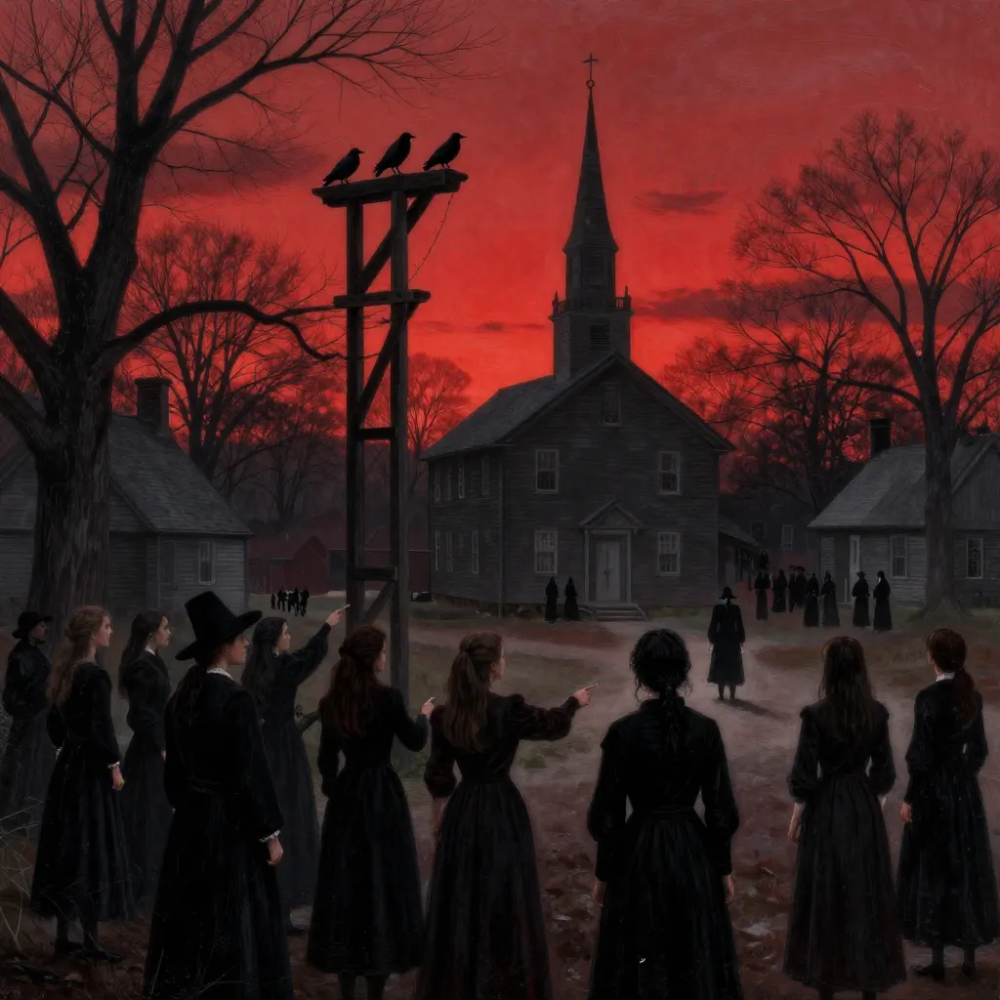

Salem Witch Trials: How Mass Hysteria and Fear Executed 20 People in Colonial America

Two girls and a winter of fear
It was the winter of 1692. In the strict, religious settlement of Salem Village, two young girls began to scream. Today that village is the town of Danvers, Massachusetts.
The girls were Betty Parris, age nine, and her cousin Abigail Williams, age eleven. Betty was the daughter of the local minister, Reverend Samuel Parris. Abigail was his niece. Accounts say that the girls twisted their bodies into strange shapes. They said that invisible hands were pinching and biting them.
They also spoke words that made no sense, and they crawled under tables. The village doctor, William Griggs, could find nothing wrong with their bodies. So he gave an answer that led to disaster. He said that the girls were bewitched.
Within weeks, the whole village was afraid. In the end, more than 200 people were accused of witchcraft. Thirty were found guilty, and twenty were put to death. At least five more died in jail. This is the story of how that happened.
A village that looked for someone to blame
The people of Salem Village were Puritans. They were Christians who followed very strict rules. To them, the Devil was as real as the soil under their feet. Any bad luck could be a sign of evil magic. It might be a failed crop, a sick child, or a dead cow.
The village also had quarrels over land and over who would lead the church. And it stood at the edge of a wild forest, where some Puritans feared that demons lived.
So when the girls began to act in this strange way, the village did not ask why. It asked who. Once people started to ask that, they found it hard to stop.
The first names
The first accusers were a small group of girls and young women, mostly between eleven and twenty years old. After Betty and Abigail, the best known was Ann Putnam Jr., who was twelve. Mercy Lewis, Mary Walcott, and Elizabeth Hubbard joined her. Their shaking and their visions were treated as proof, not as illness.
The officials pushed the girls for answers, and the girls gave names. The first three people named were Tituba, Sarah Good, and Sarah Osborne. They were among the weakest people in the village.
Tituba was an enslaved woman in the house of Reverend Parris. Records call her “Indian.” Where she came from is not certain. Sarah Good was a poor woman who asked her neighbors for food and a place to sleep. Sarah Osborne was a woman who had upset her neighbors.
Historians think that these three were not chosen by chance. They were outsiders, and they were easy to blame.
Tituba was questioned very hard. She confessed to witchcraft and named other women. Later she said that Reverend Parris had beaten a confession out of her. Her confession helped to start more accusations.
A court with a dangerous rule
In May 1692, the governor of Massachusetts, Sir William Phips, set up a special court. It was called the Court of Oyer and Terminer. Its head was Chief Justice William Stoughton, who strongly believed that witchcraft was real. The court worked with frightening speed.
Its most argued rule was called spectral evidence. A specter is a ghost or spirit. A witness could say that the spirit of an accused person had come to them in a dream or a vision. The witness could say that this spirit had pinched, bitten, or choked them.
Think about what that means. A girl could say that she dreamed of Rebecca Nurse’s ghost choking her. The court then treated the dream as proof that Nurse was a witch. Nobody could check such a dream, and nobody could prove it false.
Some historians say that without this kind of evidence, few guilty verdicts would have been possible. And the verdicts were about to turn into something much worse.
The summer when the hangings began
The first execution came on June 10, 1692. Bridget Bishop was hanged.
On July 19, five more women were hanged. They were Sarah Good, Elizabeth Howe, Susannah Martin, Rebecca Nurse, and Sarah Wildes. One report says that Sarah Good spoke to Reverend Nicholas Noyes before she died. She said, “I am no more a witch than you are a wizard.”
Rebecca Nurse was an older woman, about seventy. Many people in her town believed that she was innocent. Her case made some people begin to doubt the trials.
On August 19, five more people were put to death. One was George Burroughs, a former minister. One account says that he said the Lord’s Prayer without a mistake. Many people believed that a witch could not do that. The same account says that the crowd was stunned.
Then the minister Cotton Mather spoke to the crowd. He said that the Devil could sometimes make a witch seem holy. Burroughs was hanged.
Giles Corey said nothing
The saddest case was not a hanging at all. Giles Corey was an 81-year-old farmer. He and his wife Martha were both accused of witchcraft.
In court, Corey would not say “guilty” or “not guilty.” So he was given an old English punishment with a French name, peine forte et dure. He was laid on the ground with a board across his chest. Stones were piled on the board for two days.
Some think that Corey had a reason to stay silent. If he was never found guilty, the government could not take his property. The most told story says that his last words were simply “More weight.” He died on September 19, 1692.
Three days later, on September 22, eight more people were hanged. Martha Corey was one of them. So was Mary Easty. Before she died, Mary wrote a letter to the court. She did not ask for her own life. She asked the court to stop killing innocent people, and to question the accusers more closely.
The fear wears out
By now, the panic was wearing itself out. Too many people had been accused, and too many well-known citizens had been named. Even the governor’s wife, Lady Mary Phips, was named.
Governor Phips grew alarmed. On October 29, he ended the Court of Oyer and Terminer. A new court met in January 1693. It sharply limited spectral evidence, and almost everyone brought before it was freed. In May 1693, Phips gave a general pardon. To pardon someone is to free that person from punishment.
The crisis was over, but the harm was great. Families were broken. Property was taken. Children were left without parents. The trials had lasted more than a year, and the village carried the scar for a very long time.
Saying sorry, step by step
The apologies came slowly. In 1697, Judge Samuel Sewall stood in church while his public apology was read aloud.
In 1706, Ann Putnam Jr. stood before her church. She had been one of the fiercest accusers, and she had named more than sixty people. In public, she said that she feared she had been “instrumental” in bringing the guilt of innocent blood on the land. That means that she had helped to cause it.
Names were cleared even later. A Massachusetts law in 1957 cleared six people. Another law in 2001 cleared five more. In 2022, Elizabeth Johnson Jr. was cleared. She had been found guilty in 1693, but her death sentence was stopped. It took 329 years to clear her name.
Today a memorial stands in Salem, dedicated in 1992. It has twenty stone benches, one for each person who was put to death. Each bench shows a name, how the person died, and the date.
Here is what we know. A doctor could not explain two girls’ cries, and a frightened village found people to blame. Here is what is still open. Historians do not agree on one cause. In 1976, a scientist said that a mold on rye bread made the girls ill, but most experts reject this idea. Fear, quarrels, belief, and a court that accepted weak evidence all played a part.
Think once more of Betty and Abigail in the winter of 1692. Two girls screamed in a small village. Twenty people lost their lives, and a village still remembers them.
References & Further Reading
Boston Public Library: Salem Witch Trials Memorials — The 1992 Salem memorial with twenty benches
Wikipedia: Tituba — Her uncertain origin and her claim that Parris beat a confession out of her
📚 Recommended Reading: Six Women of Salem (on Amazon) — As an Amazon Associate, we earn from qualifying purchases.
Editorial note: It is certain that 19 people were hanged and one man was pressed to death in 1692. Historians still argue about why the panic began, and the story of the moldy bread has been rejected by most experts. See our Editorial Policy.